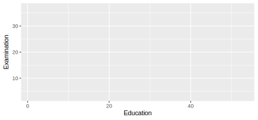
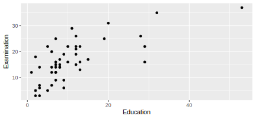
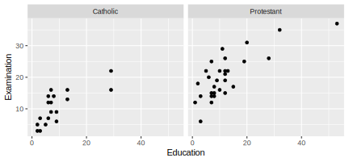
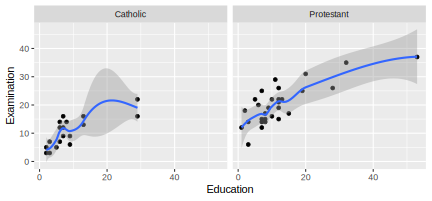
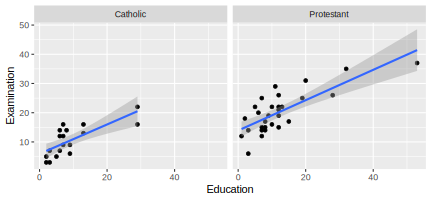
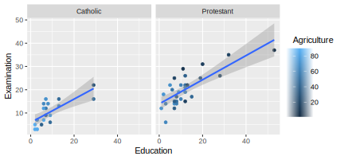
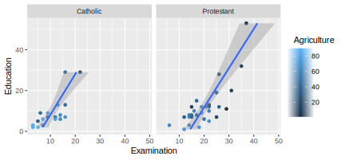
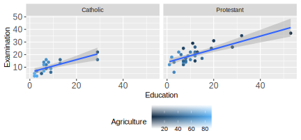
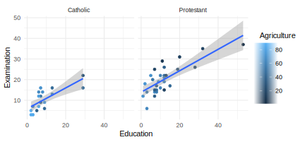
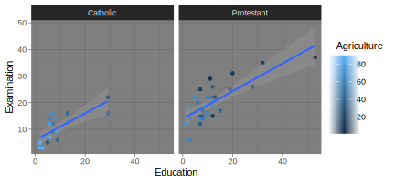

Chapter 3 Working with Data
3.1 Basics Loading/Importing Data
There are many ways to import data into R from various sources. Here, we look at how to import data from the most common sources when you use R for basic data analysis or econometric exercises.
3.2 Loading built-in datasets
The basic R installation provides some example data sets to try out R’s statistics functions. In the introduction to visualization techniques with R as well as in the statistics examples further below, we will rely on some of these datasets for sake of simplicity. Note that the usage of these simple datasets shipped with basic R are very helpful when practicing/learning R on your own. Many R packages use these datasets over and over again in their documentation and examples. Moreover, extensive documentations and online tutorials also use these datasets (see, for example the ggplot2 documentation). And, they are very useful when searching help on Stackoverflow in the context of data analysis/manipulation with R.3
In order to load such datasets, simply use the data()-function:
data(swiss)In this case, we load a dataset called swiss. After loading it, the data is stored in a variable of the same name as the dataset (here ‘swiss’). We can inspect it and have a look at the first few rows:
# inspect the structure
str(swiss)## 'data.frame': 47 obs. of 6 variables:
## $ Fertility : num 80.2 83.1 92.5 85.8 76.9 76.1 83.8 92.4 82.4 82.9 ...
## $ Agriculture : num 17 45.1 39.7 36.5 43.5 35.3 70.2 67.8 53.3 45.2 ...
## $ Examination : int 15 6 5 12 17 9 16 14 12 16 ...
## $ Education : int 12 9 5 7 15 7 7 8 7 13 ...
## $ Catholic : num 9.96 84.84 93.4 33.77 5.16 ...
## $ Infant.Mortality: num 22.2 22.2 20.2 20.3 20.6 26.6 23.6 24.9 21 24.4 ...# look at the first few rows
head(swiss)## Fertility Agriculture Examination
## Courtelary 80.2 17.0 15
## Delemont 83.1 45.1 6
## Franches-Mnt 92.5 39.7 5
## Moutier 85.8 36.5 12
## Neuveville 76.9 43.5 17
## Porrentruy 76.1 35.3 9
## Education Catholic Infant.Mortality
## Courtelary 12 9.96 22.2
## Delemont 9 84.84 22.2
## Franches-Mnt 5 93.40 20.2
## Moutier 7 33.77 20.3
## Neuveville 15 5.16 20.6
## Porrentruy 7 90.57 26.6To get a list of all the built-in datasets simply type data() into the console and hit enter. To get more information about a given dataset use the help function (for example, ?swiss)
3.2.1 Importing data from files
In most cases of applying R for econometrics and data analysis, students and researchers rely on importing data from files stored on the hard disk. Typically, such datasets are stored in a text-file-format such as ‘Comma Separated Values’ (CSV). In economics one also frequently encounters data stored in specific formats of commercial statistics/data analysis packages such as SPSS or STATA. Moreover, when collecting data (e.g., for your Master’s Thesis) on your own, you might rely on a spreadsheet tool like Microsoft Excel. Data from all of these formats can quite easily be imported into R (in some cases, additional packages have to be loaded, though).
3.2.1.1 Comma Separated Values (CSV)
A most common format to store and transfer datasets is CSV. In this format data values of one observation are stored in one row of a text file, while commas separate the variables/columns. For example, the following code-block shows how the first two rows of the swiss-dataset would look like when stored in a CSV:
"","Fertility","Agriculture","Examination","Education","Catholic","Infant.Mortality"
"Courtelary",80.2,17,15,12,9.96,22.2The function read.csv() imports such files from disk into R (in the form of a data.frame). In this example the swiss-dataset is stored locally on our disk in the folder data:
swiss_imported <- read.csv("data/swiss.csv")3.2.1.2 Spreadsheets/Excel
In order to read excel spreadsheets we need to install an additional R package called readxl.
# install the package
install.packages("readxl")Then we load this additional package (‘library’) and use the package’s read_excel()-function to import data from an excel-sheet. In the example below, the same data as above is stored in an excel-sheet called swiss.xlsx, again in a folder called data.
# load the package
library(readxl)
# import data from a spreadsheet
swiss_imported <- read_excel("data/swiss.xlsx")3.2.1.3 Data from other data analysis software
The R packages foreign and haven contain functions to import data from formats used in other statistics/data analysis software, such as SPSS and STATA.
In the following example we use haven‘s read_spss() function to import a version of the swiss-dataset stored in SPSS’ .sav-format (again stored in the folder called data).
# install the package (if not yet installed):
# install.packages("haven")
# load the package
library(haven)
# read the data
swiss_imported <- read_spss("data/swiss.sav")3.3 Data Visualization with R (ggplot2)
3.3.1 ‘Grammar of Graphics’
A few years back, Leland Wilkinson (statistician and computer scientist) wrote an influential book called ‘The Grammar of Graphics.’ In the book, Wilkinson develops a formal description (‘grammar’) of graphics used in statistics, illustrating how different types of plots (bar plot, histogram, etc.) are special cases of an underlying framework. A key point of this grammar is that we can think of graphics as consisting of different design-layers and that we can build and describe them layer by layer (see here for an illustration of this idea.
This Grammar of Graphics framework got implemented in R with the very prominent ggplot2-package, building on the very powerful R graphics engine. The result is a user-friendly environment to visualize data with enormous potential to plot almost any graphic illustrating data.
3.4 ggplot2 basics
Using ggplot2 to generate a basic plot in R is quite simple. Basically, it involves three key points:
- The data must be stored in a
data.frame(preferrably in ‘long’ format) - The starting point of a plot is always the function
ggplot() - The first line of plot code declares the data and the ‘aesthetics’ (what variables are mapped to the x-/y-axes):
ggplot(data = my_dataframe, aes(x= xvar, y= yvar))3.4.1 Tutorial
In the following, we learn the basic functionality of ggplot by applying it to the swiss dataset introduced above.
3.4.1.1 Loading/preparing the data
First, we load and inspect the data. Among other variables it contains information about the share of inhabitants of a given Swiss province who indicate to be of Catholic faith (and not Protestant).
# load the *R* package
library(ggplot2)
# load the data
data(swiss)
# get details about the data set
# ?swiss
# inspect the data
head(swiss)## Fertility Agriculture Examination
## Courtelary 80.2 17.0 15
## Delemont 83.1 45.1 6
## Franches-Mnt 92.5 39.7 5
## Moutier 85.8 36.5 12
## Neuveville 76.9 43.5 17
## Porrentruy 76.1 35.3 9
## Education Catholic Infant.Mortality
## Courtelary 12 9.96 22.2
## Delemont 9 84.84 22.2
## Franches-Mnt 5 93.40 20.2
## Moutier 7 33.77 20.3
## Neuveville 15 5.16 20.6
## Porrentruy 7 90.57 26.6As we do not only want to use this continuous measure in the data visualization, we generate an additional factor variable called Religion which has either the value 'Protestant' or 'Catholic' depending on whether more then 50 percent of the inhabitants of the province are Catholics.
# code province as 'Catholic' if more than 50% are catholic
swiss$Religion <- 'Protestant'
swiss$Religion[50 < swiss$Catholic] <- 'Catholic'
swiss$Religion <- as.factor(swiss$Religion)3.4.2 Data and aesthetics
We initiate the most basic plot with ggplot() by defining which data we want to use and in the plot aesthetics which variable we want to use on the x and y axes. Here, we are interested in whether the level of education beyond primary school in a given district is related with how well draftees from the same district do in a standardized army examination (% of draftees that get the highest mark in the examination).
ggplot(data = swiss, aes(x = Education, y = Examination))
As we have not yet defined according to what rules the data shall be visualized, all we get is an empty ‘canvas’ and the axes (with the respective label and ticks indicating the range of the values).
3.4.3 Geometries (~the type of plot)
To actually plot the data we have to define the ‘geometries,’ defining according to which function the data should be mapped/visualized. In other words, geometries define which ‘type of plot’ we use to visualize the data (histogram, lines, points, etc.). In the example code below, we use geom_point() to get a simple point plot.
ggplot(data = swiss, aes(x = Education, y = Examination)) +
geom_point()
The result indicates that there is a positive correlation between the level of education and how well draftees do in the examination. We want to better understand this correlation. Particularly, what other factors could drive this picture.
3.4.3.1 Facets
According to a popular thesis, the protestant reformation and the spread of the protestant movement in Europe was driving the development of compulsory schooling. It would thus be reasonable to hypothesize that the picture we see is partly driven by differences in schooling between Catholic and Protestant districts. In order to make such differences visible in the data, we use ‘facets’ to show the same plot again, but this time separating observations from Catholic and Protestant districts:
ggplot(data = swiss, aes(x = Education, y = Examination)) +
geom_point() +
facet_wrap(~Religion)
Draftees from protestant districts tend to do generally better (which might be an indication of better primary schools, or a generally stronger focus on scholastic achievements of Protestant children). However, the relationship between education (beyond primary schools) and examination success seems to hold for either type of districts.
3.4.3.2 Additional layers and statistics
Let’s visualize this relationship more clearly by drawing trend-lines through the scatter diagrams. Once with the non-parametric ‘loess’-approach and once forcing a linear model on the relationship between the two variables.
ggplot(data = swiss, aes(x = Education, y = Examination)) +
geom_point() +
geom_smooth(method = 'loess') +
facet_wrap(~Religion)## `geom_smooth()` using formula 'y ~ x'
ggplot(data = swiss, aes(x = Education, y = Examination)) +
geom_point() +
geom_smooth(method = 'lm') +
facet_wrap(~Religion)## `geom_smooth()` using formula 'y ~ x'
3.4.3.3 Additional aesthetics
Knowing a little bit about Swiss history and geography, we realize that particularly rural cantons in mountain regions remained Catholic during the reformation. In addition, cantonal school systems historically took into account that children have to help their parents on the farms during the summers. Thus in some rural cantons schools were closed from spring until autumn. Hence, we might want to indicate in the plot which point refers to a predominantly agricultural district. We use the aesthetics of the point geometry to color the points according to the ‘Agriculture’-variable (the % of males involved in agriculture as occupation).
ggplot(data = swiss, aes(x = Education, y = Examination)) +
geom_point(aes(color = Agriculture)) +
geom_smooth(method = 'lm') +
facet_wrap(~Religion)## `geom_smooth()` using formula 'y ~ x'
The resulting picture is in line with what we have expected. Overall, the districts with a lower share of occupation in agriculture tend to have rather higher levels of education as well as higher achievements in the examination.
3.4.3.4 Coordinates
Finally, there are countless options to further refine the plot. For example, we can easily change the orientation/coordinates of the plot:
ggplot(data = swiss, aes(x = Education, y = Examination)) +
geom_point(aes(color = Agriculture)) +
geom_smooth(method = 'lm') +
facet_wrap(~Religion) +
coord_flip()## `geom_smooth()` using formula 'y ~ x'
3.4.3.5 Themes: Fine-tuning the plot
In addition, the theme()-function allows to change almost every aspect of the plot (margins, font face, font size, etc.). For example, we might prefer to have the plot legend at the bottom and have larger axis labels.
ggplot(data = swiss, aes(x = Education, y = Examination)) +
geom_point(aes(color = Agriculture)) +
geom_smooth(method = 'lm') +
facet_wrap(~Religion) +
theme(legend.position = "bottom", axis.text=element_text(size=12) ) ## `geom_smooth()` using formula 'y ~ x'
Moreover, several theme-templates offer ready-made designs for plots:
ggplot(data = swiss, aes(x = Education, y = Examination)) +
geom_point(aes(color = Agriculture)) +
geom_smooth(method = 'lm') +
facet_wrap(~Religion) +
theme_minimal()## `geom_smooth()` using formula 'y ~ x'
ggplot(data = swiss, aes(x = Education, y = Examination)) +
geom_point(aes(color = Agriculture)) +
geom_smooth(method = 'lm') +
facet_wrap(~Religion) +
theme_dark()## `geom_smooth()` using formula 'y ~ x'
3.5 Basic Statistics and Econometrics with R
In the previous part we have learned how to implement basic statistics functions in R, as well as notices that for most of these statistics R already has a build-in function.
For example, mean and median:
# initiate sample
a <- c(10,22,33, 22, 40)
names(a) <- c("Andy", "Betty", "Claire", "Daniel", "Eva")
# compute the mean
mean(a)## [1] 25.4# compute the median
median(a)## [1] 22…as well as different measures of variability,
range(a)## [1] 10 40var(a)## [1] 132.8sd(a)## [1] 11.52and test statistics such as the t-test.
# define size of sample
n <- 100
# draw the random sample from a normal distribution with mean 10 and sd 2
sample <- rnorm(n, mean = 10, sd = 2)
# Test H0: mean of population = 10
t.test(sample, mu = 10)##
## One Sample t-test
##
## data: sample
## t = -1.1, df = 99, p-value = 0.3
## alternative hypothesis: true mean is not equal to 10
## 95 percent confidence interval:
## 9.377 10.173
## sample estimates:
## mean of x
## 9.7753.5.1 Regression analysis with R
Finally, R and additional R packages offer functions for almost all models and tests in modern applied econometrics. While the syntax and return values of these functions are note 100% consistent (due to the fact that many different authors contributed some of these functions), applying them is usually quite similar. Functions for econometric models typically have the two main parameters data (the dataset to use in the estimation, in data.frame-format) and formula (a symbolic description of the model to be fitted, following a defined convention). Typically, the following three steps are involved when running regressions in R (assuming the data is already loaded and prepared):
- In
formula, we define the model we want to fit as an object of class ‘formula.’ For example, we want to regressExaminationonEducationwith theswiss-dataset used above.
model1 <- Examination~Education- Fit the model with the respective estimator. Here we use
lm()the R workhorse for linear models to fit the model with OLS:
fit1 <- lm(formula = model1, data = swiss)- Get summary statistics with the generic
summary(). In the case of an object of classlm(the output oflm()), this amounts to the typical coefficient t-statistics an p-values shown in regression tables:
summary(fit1)##
## Call:
## lm(formula = model1, data = swiss)
##
## Residuals:
## Min 1Q Median 3Q Max
## -10.932 -4.763 -0.184 3.891 12.498
##
## Coefficients:
## Estimate Std. Error t value Pr(>|t|)
## (Intercept) 10.1275 1.2859 7.88 5.2e-10 ***
## Education 0.5795 0.0885 6.55 4.8e-08 ***
## ---
## Signif. codes:
## 0 '***' 0.001 '**' 0.01 '*' 0.05 '.' 0.1 ' ' 1
##
## Residual standard error: 5.77 on 45 degrees of freedom
## Multiple R-squared: 0.488, Adjusted R-squared: 0.476
## F-statistic: 42.9 on 1 and 45 DF, p-value: 4.81e-083.5.2 Linear model
Putting the pieces together, we can write a simple script to analyse the swiss-dataset (in spirit of the data visualization above):
# load data
data(swiss)
# linear regression with one variable
# estimate coefficients
model_fit <- lm(Examination~Education, data = swiss)
# t-tests of coefficients (and additional statistics)
summary(model_fit)##
## Call:
## lm(formula = Examination ~ Education, data = swiss)
##
## Residuals:
## Min 1Q Median 3Q Max
## -10.932 -4.763 -0.184 3.891 12.498
##
## Coefficients:
## Estimate Std. Error t value Pr(>|t|)
## (Intercept) 10.1275 1.2859 7.88 5.2e-10 ***
## Education 0.5795 0.0885 6.55 4.8e-08 ***
## ---
## Signif. codes:
## 0 '***' 0.001 '**' 0.01 '*' 0.05 '.' 0.1 ' ' 1
##
## Residual standard error: 5.77 on 45 degrees of freedom
## Multiple R-squared: 0.488, Adjusted R-squared: 0.476
## F-statistic: 42.9 on 1 and 45 DF, p-value: 4.81e-08Specifying the linear model differently can be done by simply changing the formula of the model. For example, we might want to control for the share of agricultural occupation.
# multiple linear regression
# estimate coefficients
model_fit2 <- lm(Examination~Education + Catholic + Agriculture, data = swiss)
# t-tests of coefficients (and additional statistics)
summary(model_fit2)##
## Call:
## lm(formula = Examination ~ Education + Catholic + Agriculture,
## data = swiss)
##
## Residuals:
## Min 1Q Median 3Q Max
## -9.315 -2.831 -0.349 3.349 7.417
##
## Coefficients:
## Estimate Std. Error t value Pr(>|t|)
## (Intercept) 18.5370 2.6371 7.03 1.2e-08 ***
## Education 0.4242 0.0868 4.89 1.5e-05 ***
## Catholic -0.0798 0.0168 -4.75 2.3e-05 ***
## Agriculture -0.0676 0.0396 -1.71 0.095 .
## ---
## Signif. codes:
## 0 '***' 0.001 '**' 0.01 '*' 0.05 '.' 0.1 ' ' 1
##
## Residual standard error: 4.3 on 43 degrees of freedom
## Multiple R-squared: 0.728, Adjusted R-squared: 0.709
## F-statistic: 38.3 on 3 and 43 DF, p-value: 3.21e-123.5.3 Other econometric models and useful regression packages
Various additional packages provide all kind of functions to estimate diverse economietric models. Many generalized linear models can be fitted with the glm()-function (formula and data used as in lm()):
- Probit model:
glm(..., family = binomial(link = "probit")). - Logit model:
glm(..., family = "binomial"). - Poisson regression (count data):
glm(..., family="poisson").
Other frequently used packages for econometric regression analysis:
- Panel data econometrics: package
plm,fixest,lfe. - Time-series econometrics: package
tseries. - Basic IV regression:
ivreg()in packageAER. - Generalized methods of moments: package
gmm. - Generalized additive models: package
gam. - Lasso regression: package
glmnet. - Survival analysis: package
survival.
See also the CRAN Econometrics Task View.
3.5.4 Regression tables
Economists typically present regression results in detailed regression tables, with regression coefficients in rows and model specifications in columns. The package stargazer provides some functions to generate such tables very easily for outputs of the most common regression functions (lm(), glm(), etc.):
# load packages
library(stargazer)# print regression results as text
stargazer(model_fit, model_fit2, type = "text")##
## =================================================================
## Dependent variable:
## ---------------------------------------------
## Examination
## (1) (2)
## -----------------------------------------------------------------
## Education 0.579*** 0.424***
## (0.089) (0.087)
##
## Catholic -0.080***
## (0.017)
##
## Agriculture -0.068*
## (0.040)
##
## Constant 10.130*** 18.540***
## (1.286) (2.637)
##
## -----------------------------------------------------------------
## Observations 47 47
## R2 0.488 0.728
## Adjusted R2 0.476 0.709
## Residual Std. Error 5.773 (df = 45) 4.304 (df = 43)
## F Statistic 42.850*** (df = 1; 45) 38.350*** (df = 3; 43)
## =================================================================
## Note: *p<0.1; **p<0.05; ***p<0.01Alternatively the regression table can be directly generated as LaTeX table or as HTML table, which can be parsed and rendered for an html document or pdf document, when generated as part of an Rmd-file (such as this lecture notes).
# conditional on the output format of the whole document,
# generate and render a HTML or a LaTeX table.
if (knitr::is_latex_output()) {
stargazer(model_fit, model_fit2, type = "latex",
header = FALSE, table.placement = "H")
} else {
stargazer(model_fit, model_fit2, type = "html")
}| Dependent variable: | ||
| Examination | ||
| (1) | (2) | |
| Education | 0.579*** | 0.424*** |
| (0.089) | (0.087) | |
| Catholic | -0.080*** | |
| (0.017) | ||
| Agriculture | -0.068* | |
| (0.040) | ||
| Constant | 10.130*** | 18.540*** |
| (1.286) | (2.637) | |
| Observations | 47 | 47 |
| R2 | 0.488 | 0.728 |
| Adjusted R2 | 0.476 | 0.709 |
| Residual Std. Error | 5.773 (df = 45) | 4.304 (df = 43) |
| F Statistic | 42.850*** (df = 1; 45) | 38.350*** (df = 3; 43) |
| Note: | p<0.1; p<0.05; p<0.01 | |
Properly posting a question on Stackoverflow requires the provision of a code example based on data that everybody can easily load and access.↩︎